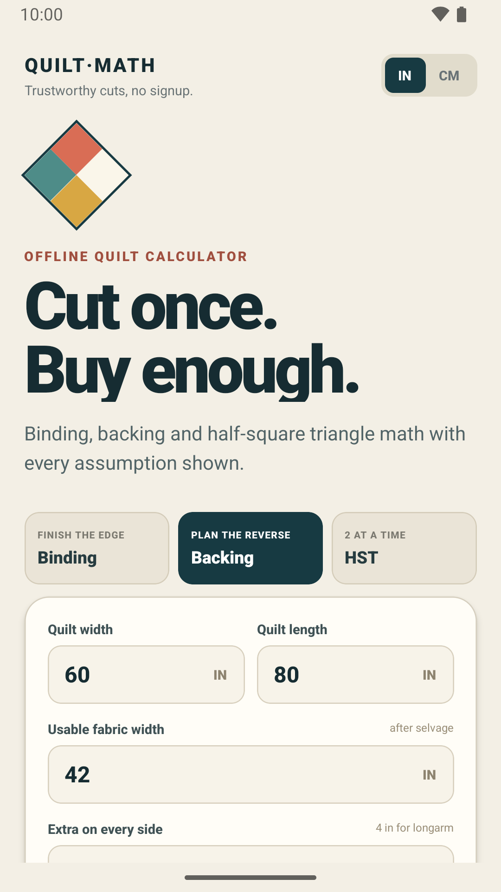
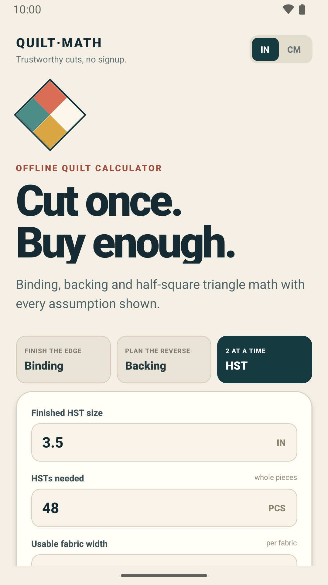
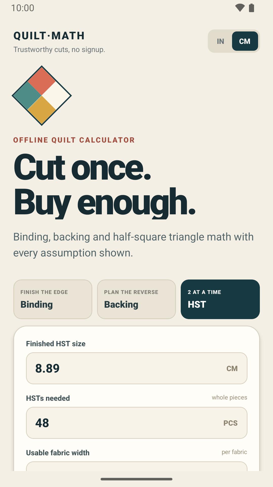
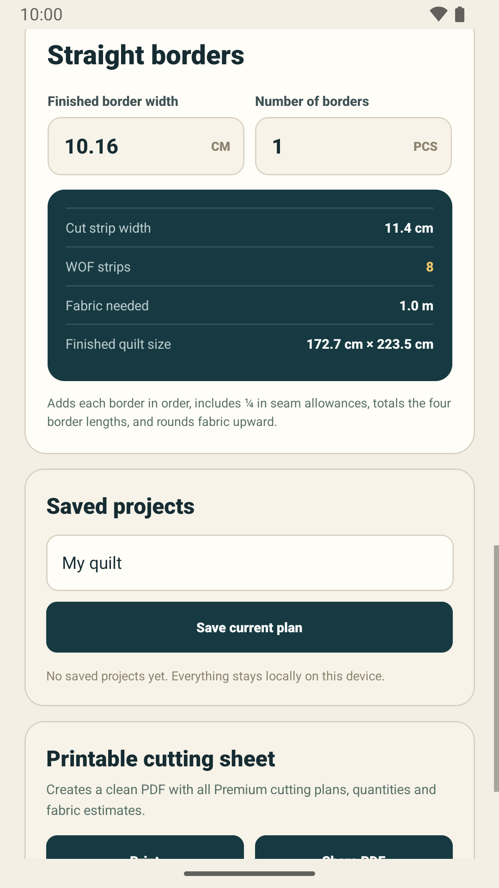

Quilt math you can trust — right on your phone.
QuiltMath turns binding, backing, and half-square-triangle math into a clear cutting plan — offline, with no account, no ads, and no analytics.

About Broken Man Studios
Broken Man Studios is an independent, one-person Android development studio. QuiltMath is its first released app.
Who's behind it
QuiltMath is built and maintained by a single independent developer working under the studio name Broken Man Studios — no team, no outside investors, just one person who wanted quilt math to be less error-prone.
Why it exists
Fabric is expensive and miscut yardage is frustrating. QuiltMath shows its assumptions and rounds to practical eighth-yard increments, so quilters can double-check a plan before cutting.
How to reach us
Questions, feedback, or verification requests are welcome any time at contact@brokenmanstudios.com.
What QuiltMath does
Plan fabric cuts with clear, offline quilt calculations. Switch between inches and centimetres, enter your measurements, and see a cutting plan with the assumptions shown.
Binding strips & yardage
Calculate binding strip counts and fabric needed for any quilt perimeter.
Backing panels
Find backing yardage and the lower-yardage orientation automatically.
Half-square triangles
Two-at-a-time HST sizing with the seam allowance already accounted for.
Inches or centimetres
Switch units at any time — all calculations stay on your device.
No account, no ads, no analytics
Nothing to sign up for and nothing tracking you. Calculations happen entirely on your device.
★ Premium — one-time purchase, not a subscription
Borders & sashing
Straight-border planning plus join-friendly and piece-aware sashing options, so you can pick the pooled estimate or the more conservative per-row plan.
Flying Geese
No-waste four-at-a-time cutting for the standard 2:1 finished ratio. A non-standard ratio shows guidance instead of numbers that wouldn't apply.
Quarter-square triangles
Two-at-a-time QST sizing for two fabrics, with exact and oversize-and-trim cutting allowances shown in the interface.
Continuous bias binding
Plan continuous bias strips instead of straight-grain binding, compared side by side with the standard method.
Saved projects & PDF export
Name and keep quilt projects on-device, then print or share a PDF cutting sheet covering every calculator.
How the numbers work
QuiltMath shows a planning estimate, not a pattern-specific cutting instruction. Here's exactly what each calculator assumes, so you know what you're getting before you cut.
How much extra fabric does binding add for corners and joins?
QuiltMath adds 12 in (30.5 cm) to the quilt perimeter for corners and joins, then rounds the total up to the next practical 1/8 yard or 0.1 m.
What seam allowance does the half-square triangle calculator use?
The two-at-a-time method adds 7/8 in for exact cutting, or 1 in for oversize-and-trim, and quantities always round up to a complete pair.
Does Flying Geese work for any block ratio?
It uses the no-waste four-at-a-time method for the standard 2:1 finished ratio. A non-standard ratio gets guidance instead of cutting dimensions that wouldn't apply.
How does QuiltMath pick a backing layout?
It compares lengthwise and crosswise panel layouts with your chosen overhang, and shows the lower-yardage option first.
Why does QuiltMath round fabric amounts up?
Purchase amounts round up to the next practical 1/8 yard (imperial) or 0.1 m (metric), so you're buying a size fabric stores actually sell, with a small safety margin.
Should I still double-check before cutting?
Yes — always measure the finished quilt top, compare the result with your pattern, and cut a test unit before cutting all your fabric.
What's new
QuiltMath is actively maintained. A few recent updates:
Home screen icon fix Aug 21, 2026
Fixed the app icon appearing as a plain square on some phones and launchers instead of the intended diamond mark. Also improved screen-reader support and Premium-status reliability right after app start.
More reliable Premium purchases Aug 13, 2026
Completed one-time purchases are now confirmed immediately, and interrupted transactions can recover automatically on app start or via Restore purchase.
Tablet optimization Aug 12, 2026
Layout and touch targets tuned for larger Android screens.
Clearer calculation guidance Aug 12, 2026
Contextual info and an in-app guide explain each calculator's assumptions. Sashing gained join-friendly and piece-aware planning, and Flying Geese now validates the required 2:1 ratio.
Coming up
QuiltMath is under active development. Here's what's being worked on next:
iPhone & iPad version in progress
An iOS build of QuiltMath is in active development, sharing the same offline-first calculators and no-account, no-ads, no-analytics approach as the Android version. No release date yet.
Visual calculation guides planned
Lightweight, offline illustrations showing where to measure, how strips and cutting plans fit together, and how each calculator's numbers were reached — starting with a Binding diagram prototype already tested on-device.
Screenshots
A look at the calculators, from binding to the Premium PDF export.




How to try QuiltMath
QuiltMath is currently in Google Play's closed testing phase — a required step before it's a fully public listing. That means joining takes a couple of extra clicks for now.
Current status: Closed testing
-
Join the tester Google Group
groups.google.com/g/quiltmath-closed-testing
You may briefly see "you don't have permission to access this content" — that's normal, just click Join group. -
Become a tester on Google Play
play.google.com/apps/testing/com.quiltmath.calculator -
Install from the Play Store
play.google.com/store/apps/details?id=com.quiltmath.calculator
Once you're a tester, this is the completely normal Play Store page — screenshots, description, and an install button, same as any released app.
This closed-testing stage runs for a minimum of 14 days as required by Google Play. After that, QuiltMath moves to a normal public listing — no group and no extra steps, just a regular Play Store link.
Questions before you try it?
Happy to answer anything — verification, testing, or feedback.